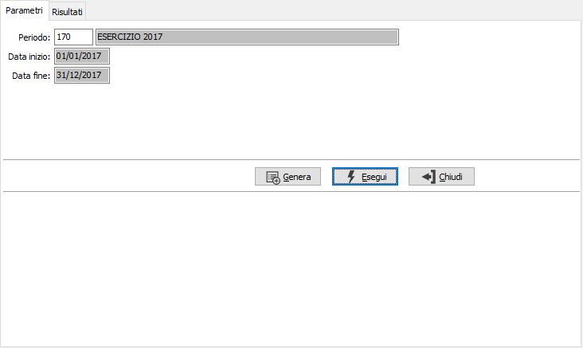
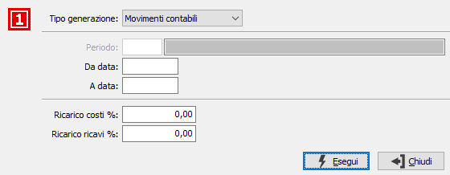
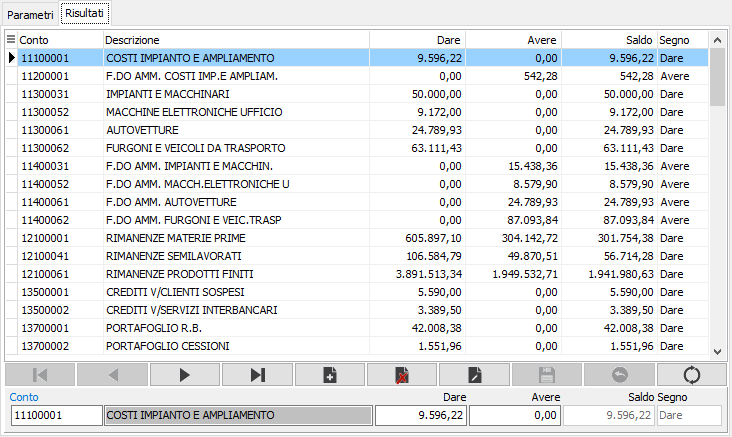

Gestione budget preventivo
La procedura consente di inserire, o calcolare, per ogni sottoconto presente in OS1 dei valori di budget preventivo che, successivamente elaborati con le voci di riclassificazione, potranno essere utilizzati per fare bilanci ed analisi comparate preventivo/consuntivo.
La pagina dei parametri consente di accedere ai valori del periodo richiesto per una ulteriore manutenzione oppure, tramite il pulsante Genera di creare nuovi valori.

PERIODO: inserire il periodo per cui si desiderano manutenere oppure inserire i valori di budget preventivo, l'inserimento del periodo determina la valorizzazione delle date di inizio e fine. Sul campo sono attive le funzioni di ricerca (F9) sulla tabella stessa.
La pressione del pulsante Genera accede alla seguente finestra di generazione da cui è possibile effettuare la generazione dei valori direttamente dai movimenti contabili, selezionandoli per data, oppure da altri valori di budget relativi ad un periodo specifico; i valori così elaborati potranno essere incrementati in automatico in base alle percentuali inserite.
Nel caso in cui esistano già dei valori per il periodo richiesto nella selezione principale, all'utente sarà richiesto se desidera sovrascrivere i dati oppure annullare l'operazione.

TIPO GENERAZIONE: consente di specificare se la generazione dei valori deve essere effettuata dai movimenti contabili, per data, oppure da altri valori di budget preventivo. In quest'ultimo caso saranno disattivate le date ed attivata la richiesta del periodo da cui effettuare la generazione.
PERIODO: inserire il periodo da cui effettuare la generazione dei valori, l'inserimento del periodo determina la valorizzazione delle date. Sul campo sono attive le funzioni di ricerca (F9) sulla tabella stessa. Il campo è attivo solo se la generazione avviene da valori di budget preventivo.
DA DATA/A DATA: specificare i limiti di data, solo per generazione da movimenti contabili, entro i quali saranno letti i movimenti contabili da cui generare i valori del budget preventivo.
RICARICO COSTI %: indicare l'eventuale percentuale di ricarico, che sarà applicata al valore dei sottoconti di COSTO per generare i valori del budget preventivo.
RICARICO RICAVI %: indicare l'eventuale percentuale di ricarico, che sarà applicata al valore dei sottoconti di RICAVO per generare i valori del budget preventivo.
La pagina dei risultati contiene i valori relativi al periodo selezionato o generato e consente la modifica dei dati o l'inserimento di nuovi valori. L'importo ed il segno del SALDO sono calcolati automaticamente in base agli importi DARE ed AVERE dei conti.

CONTO: indicare il sottoconto a cui saranno assegnati i valori. Sul campo è attiva la ricerca (F9) sulla tabella stessa.
DARE: indicare l'importo con segno DARE relativo al conto selezionato.
AVERE: indicare l'importo con segno AVERE relativo al conto selezionato.